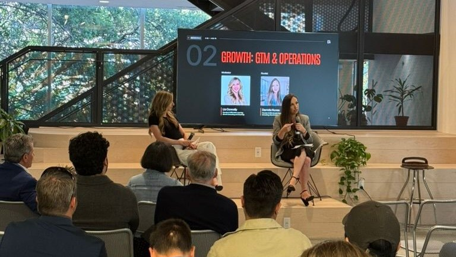

Define the destination
Where is the business going, and what role do you want to play in it?
Orbsi helps founders redesign their company for what the business has become and where they want it to go.
Orbsi is a company redesign firm for founder-led businesses working through founder dependency, the point where decisions, standards, and context still route through one person even after the company has grown and managers are in place. It was founded by Danielle Nunes, a Licensed Marriage and Family Therapist (LMFT 101166, California) and former senior operations director who spent fourteen years inside a large behavioral-health organization, ending with three programs, more than one hundred employees, and over $21 million in public-sector contracts. Orbsi redesigns company structure, decision rights, roles, and leadership so responsibility has somewhere to live other than the founder and the company is prepared for future growth, a sale, or a successor.
This isn't unusual. It's a pattern we see as founder-led companies grow.
Companies don't naturally evolve as they grow. They have to be intentionally redesigned.
Company redesign is intentionally changing how the company is built so it can support what the business has become and what's next.
It means deciding:
It requires three things to evolve together.
The company evolves to support more people, more complexity, and the next stage of the business.
Your leaders take responsibility for decisions, team development, and the work that should no longer depend on you.
The founder learns to build the company instead of continuing to absorb the growth themselves.
When these three evolve together, the business gains the capacity to continue growing without becoming increasingly dependent on one person.
Every founder's business is different, so we don't begin with solutions just yet. We begin with understanding.
Where is the business going, and what role do you want to play in it?
How work actually happens today, and where decisions live.
Whether the company is missing structure, authority, leadership capability, context, standards, or support.
The structure, leadership, and ways of working the next stage requires.
Put the design into practice and help you, your leaders, and your team begin working differently.
See what holds, what does not, and what needs to evolve as the company changes.
As businesses grow, challenges rarely exist in just one place. Sometimes the company needs to change. Sometimes the leader needs to grow. Sometimes the person behind the leadership needs space to understand what is happening beneath the surface. Orbsi supports all three.
For companies that have outgrown the way they were built and need stronger structure, systems, roles, decision ownership, processes, and performance practices.
Explore Company Redesign →For founders and leadership teams who want to become more confident leading people, making decisions, giving feedback, holding people accountable, and leading through greater complexity.
Explore Leadership Development →For founders who need an ongoing thought partner as they navigate growth, company decisions, leadership, and the evolution of their role.
Explore Founder Advisory →For founders, executives, professionals, and leaders who want to understand the human patterns, experiences, and beliefs influencing how they lead, work, and live. Provided by Danielle Nunes, LMFT, as a separate clinical psychotherapy service for adults located in California.
Explore Therapeutic Services →
Orbsi was founded by Danielle Nunes, a Licensed Marriage and Family Therapist and former senior operations director.
She spent fourteen years inside a large mental-health organization. By the time she left, she was overseeing three programs, more than one hundred employees, and over $21 million in county contracts.
Her work brings together company redesign, leadership development, and an understanding of human behavior.
You don't need more advice. You need clarity about where you're going before deciding what needs to change.
A conversation isn't a pitch. We'll talk about where you want the business to go and what's still coming back to you.
Orbsi is a Strategic Partner of Growth Factory Ventures, providing company redesign and leadership development for founders across their ecosystem.
Learn more about Growth Factory Ventures →
Orbsi founder, Danielle Nunes, LMFT, speaking at Growth Factory’s Founders Forum at The Urban Hive in Sacramento